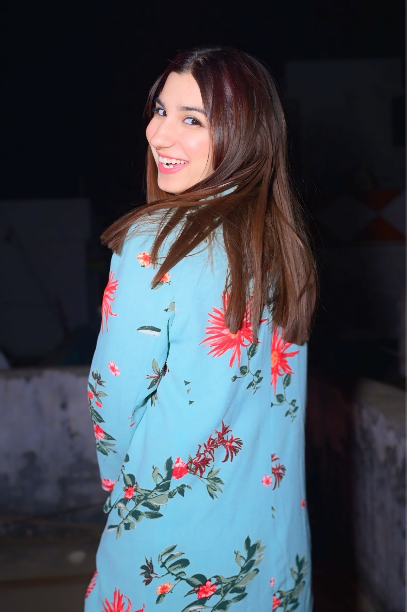

Jahnvi Malik

Summary
Results-driven B.Tech Computer Science student with a proven track record as an English educator and
content writer. Demonstrates exceptional leadership, communication, and interpersonal skills. Currently
expanding expertise in machine learning, web development, and Python. Known for adaptability, strong oratory
skills, and a well-rounded ability to excel in both technical and creative environments.
Work Experience
Content Writer(2023-Present)
Hetaksh Essential Oils
-
English Educator(March 2023 - August 2023)
Hello Learner
Education
-
Invertis University(2023-2027)
B.Tech (Computer Science and Engineering)
1st year: 8.9 CGPA
-
SR International School(2022)
12th (PCM and Computer Science)
83.4%
-
Chickar International School(2020)
10th
96.2%
Skills
- Web Development
- Python
- Content Writing
- Teaching
- Communication
- Problem-Solving
- Interpersonal Skills
Achievements and Certifications
- Educator of the Month (3 Months in a row)
- Chatbot Project using Python
- Web Development Bootcamp 2023
- Model United Nations,La Martinere,Lucknow(2019)
- Welham's Debate Competition(2020)
Other